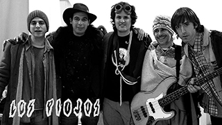

Los Piojos
Su Historia
El barrio "Ciudad Jardín", situado en el conurvano de la pcia. de Bs. As., es el que vio nacer a esta leyenda del rock argentino "Los Piojos". Miguel Ángel Rodríguez "Micky", Daniel Buira y Daniel "Pity" Fernández, amantes de la música y el rock, comenzaron a tocar junto a otros amigos del barrio.
Así comenzaron "Los Piojos", nombre que eligió Daniel "Piti" Fernández de "Los piojos del submundo", una canción de Fabiana Cantilo y los Perros Calientes.
Pablo Guerra, guitarrista, trajo a otro amigo del barrio que tocaba la armónica, estudiaba teatro y se defendía con el bajo. Así llegó Andrés Ciro Martínez quien reemplazó a micky en el bajo por un tiempo y terminaría haciendose cargo de la voz principal.
Durante finales de 1989 y principios de 1990 comienzan sus presentaciones en pequeños escenarios del rock porteño y bonaerense, tales como el Teatro Arlequines, Graf Zeppelin, Ma Baker (en Ciudad Jardín), donde Ciro cantó por primera vez.
En 1990, el grupo resultó elegido banda revelación por Patricio Rey y sus Redonditos de Ricota en la encuesta del "S!" de Clarín.
Luego del éxito de su primer disco de estudio, “Chactuchac” (1992), Micky, Tavo, Dani y Ciro alquilan una casa en la esquina de Av. Libertad y Palazzo. Allí compusieron los discos “Ay, ay, ay” y “Tercer Arco”. La canción “Esquina Libertad” es un homenaje a ese lugar Calle de Libertad, tantas curvas te siento; vi encerrado un ombú gritar, el ombú que da el tiempo. No hay carteles para saber cuál será tu sendero; como la arena debe ser, como el aire de enero…
(Esquina Libertad, Tercer Arco 1996).
En 2009 ya habría murmullos de que algo no marchaba bien entre los músicos. Los Piojos en su página web, anuncian un "parate por tiempo indefinido", la noticia se expandió rapidamente, el show estaba previsto para el 14 de mayo en el Club Cdad. de Bs. As. pero agotó su capacidad rápidamente y el show se mudó al Estadio de River Plate.
El sábado 30 de mayo del 2009 en el estadio Monumental, ante 65 mil personas que explotaban la cancha, luego de 3 horas de fiesta, 30 temas, himnos argentinos, Andrés Ciro gritó su típico "chas gracias..." acompañado de "Tenemos que terminar por cuestiones municipales", abrazando al resto de la banda y saludando extensamente al público. Aunque no era la despedida oficial, muchos lo sospechaban.
Lo que sería un simple "parate", fue en realidad el final de un grupo de rock que marcó una generación desde su sonido y sus letras. La prensa y sus fans denominaron como “el último ritual” al del 30 de mayo.
Integrantes
Andrés Ciro Martínez
Nació el 11 de enero de 1968 en Buenos Aires, Argentina. Fue el vocalista de Los Piojos desde el inicio hasta el final de la banda (1989-2009) En la actualidad es Lider de la banda "Ciro y los Persas".
"Tavo" Kupinski
Nació el 18 de enero de 1974 en Buenos Aires, Argentina. En 1991 se unió a Los Piojos para reemplazar al guitarrista Pablo Guerra. El 4 de enero de 2011, falleció en un accidente automovilístico en la Ruta Provincial 63, cerca de la Ciudad de Dolores.
"Micky" Rodríguez
Nació el 10 de abril de 1968 en el barrio de Villa Bosch, Argentina. Fue el bajista y uno de los miembros fundadores de Los Piojos, además, fué voz principal en dos canciones de su autoría: "Fijate" y "Un buen día". En la actualidad se encuentra con su propio proyecto musical llamado "La Que Faltaba".
"Roger" Cardero
Nació el 24 de marzo de 1976 en el barrio de Caballito, Argentina. Se incorporó a la banda en el año 2000 como baterista en reemplazo de Daniel Buira. Desde el año 2018 es el baterista de la banda "La Franela".
"Piti" Fernández
Nació el 11 de marzo de 1971 en el barrio de Caseros, Argentina. Fue Guitarrista y miembro fundador de Los Piojos. En septiembre de 2008, abandonó la banda para concretar su proyecto personal "La Franela".
Daniel Buira
Nació el 26 de septiembre de 1971 en Villa Bosch, Argentina. Miembro fundador de la banda, se desempeñó como baterista y percusionista. En el año 2000, abandona la banda. En 1995, fundó la escuela de percusión "La Chilinga", famosa por grabar con varios artistas de renombre.
Juanchi Bisio
Nació 13 de diciembre de 1981 en Buenos Aires, Argentina. Se sumó a principios de septiembre del 2008 como guitarrista, en el lugar Daniel "Piti" Fernández. En la actualidad es guitarrista de la banda "La chancha muda".
Historia del Rock Nacional
El rock argentino tuvo sus inicios en la década de 1950, influenciado por el rock and roll estadounidense y británico que llegaba a través de medios como la radio y discos importados. Aunque el rock and roll ya estaba presente en Argentina, el movimiento comenzó a ganar fuerza a partir de la década de 1960 con la llegada de nuevos sonidos y estilos. El rock argentino se distingue por el uso prominente de la guitarra eléctrica, el bajo eléctrico y la batería como pilares de su sonido. La guitarra eléctrica no solo proporciona riffs distintivos y solos, sino que también ha evolucionado con estilos únicos que van desde el rock clásico y el blues hasta el punk y el rock alternativo. Nombres como Luis Alberto Spinetta, Gustavo Cerati y Pappo son icónicos en este sentido. El bajo eléctrico complementa la guitarra con líneas melódicas y rítmicas que sostienen la estructura armónica de las canciones, contribuyendo al groove y la profundidad del sonido. Figuras como Pedro Aznar, Zeta Bosio y Flavio Cianciarulo han dejado huella con su habilidad y creatividad en el bajo. La batería marca el ritmo fundamental del rock argentino, adaptándose a diversos estilos que van desde lo más pesado y contundente del rock hasta ritmos más sutiles y complejos en géneros como el rock progresivo. Los teclados y sintetizadores también han tenido un papel importante, especialmente en bandas que exploran sonidos más experimentales y progresivos. En términos de armonías, el rock argentino ha incorporado influencias de la música folklórica y el tango, fusionándolas con estructuras armónicas más tradicionales del rock occidental. Esto se refleja en el uso de acordes y progresiones que a veces tienen un carácter melódico y emotivo particular, reflejando temas tanto personales como sociales dentro del contexto argentino.
-
Década de 1950
En esta época, el rock and roll estadounidense se popularizó en todo el mundo, incluyendo Argentina. Artistas como Elvis Presley, Chuck Berry y Little Richard influenciaron a jóvenes argentinos, quienes empezaron a formar bandas locales y a interpretar versiones de estos éxitos. Bandas como Los Teen Tops y Los Llopis fueron pioneras en este movimiento inicial.
-
Década de 1960
La influencia del rock británico, especialmente de The Beatles, transformó la escena musical argentina. Bandas como Los Gatos y Los Beatniks comenzaron a componer canciones originales influenciadas por estos nuevos sonidos. Este período marcó el inicio de una identidad propia del rock argentino, que combinaba influencias internacionales con elementos locales y letras en español.
-
Década de 1970
Esta década fue crucial para el desarrollo del rock argentino. Surgieron bandas y artistas que se convirtieron en íconos del género, como Almendra (liderada por Luis Alberto Spinetta), Manal, Vox Dei, Pappo's Blues (de Norberto "Pappo" Napolitano), y Sui Generis (liderada por Charly García y Nito Mestre), entre otros. Estas bandas exploraron temas más profundos y experimentaron con nuevas formas musicales, enriqueciendo el panorama del rock argentino.
-
Décadas posteriores
En las décadas de 1980 y 1990, el rock argentino continuó evolucionando con bandas como Soda Stereo (liderada por Gustavo Cerati), Los Redondos (Patricio Rey y sus Redonditos de Ricota), Los Fabulosos Cadillacs, Sumo, y Divididos, Los Piojos, entre otros. Cada una de estas bandas contribuyó con su propio estilo y letras que reflejaban la realidad social y política del país, consolidando aún más la escena del rock argentino tanto a nivel nacional como internacional.